Bull Put Ladder:
The bull put ladder is a bearish strategy very similar to the bear call ladder. It is an extension of Bull Put Spread but has 3 legs rather than 2.
Example of Bull Put Ladder:
Strategy
Note that the options belong to the same underlying, have same expiration date and are in the same ratio (1:1:1).
This might be a net credit strategy (mostly, might vary depending on the strikes chosen.).
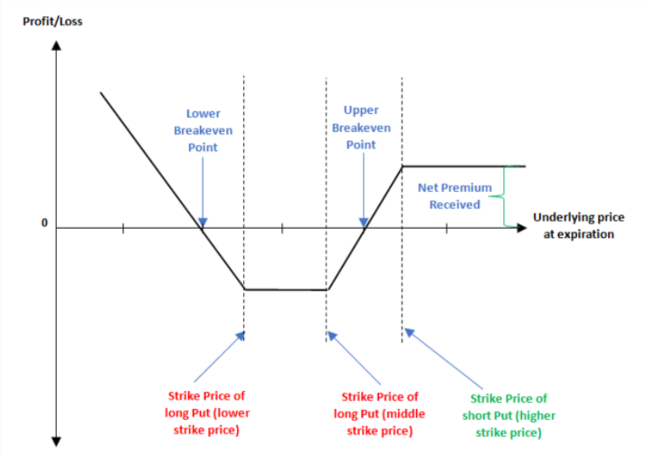
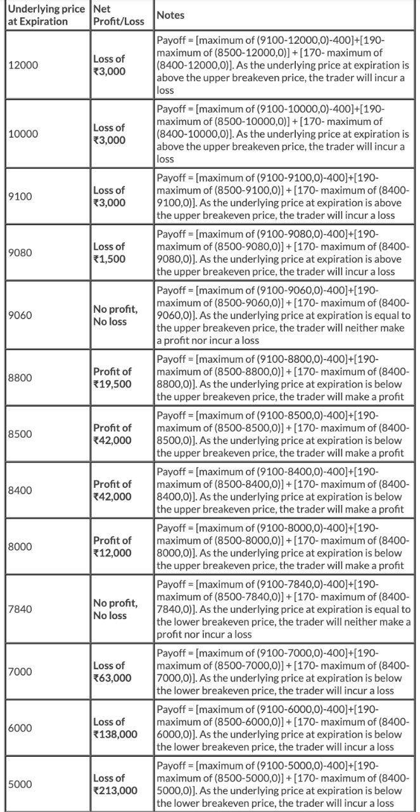
The calculations are as follows:
Net Credit = Premium of ATM put option - (Premium of middle OTM strike + Premium of Lower OTM strike)
Upper Breakeven Point = Strike of ATM Put – Net Credit
Lower Breakeven Point = Strike of Lower OTM Put + Strike of Middle OTM Put – Strike of ATM Put + Net Credit
Maximum Profit = Unlimited
Maximum Loss = Strike of ATM – Strike of middle OTM – Net Credit
Option Greeks:
Delta:
Because this strategy is neutral to bullish at initiation, Delta initially is positive and hence benefits the position when the underlying price rises, and vice
versa. However, Delta turns negative when the underlying price drops and inches towards the strikes of the long Puts. When this happens, falling prices start benefiting the option position.
Gamma:
Gamma is slightly negative at initiation but bottoms out at the higher strike, causing the Delta to become more positive when the underlying price falls. However, if the price fall continues, Gamma turns positive, causing the Delta to eventually move into the negative zone. Gamma peaks out at the lower strike, causing the Delta to become more negative if the underlying price continues dropping.
Vega:
When the underlying price is below the lower breakeven point or above the upper breakeven point, Vega is positive and hence, rising volatility is helpful to the position, and vice versa. On the other hand, when the underlying price is between the two breakeven points, Vega is negative and hence, rising volatility hurts the position, and vice versa.
Theta:
When the underlying price is below the lower breakeven point or above the upper breakeven point, Theta is negative because of which time decay hurts the position. On the other hand, when the underlying price is between the two breakeven points, Theta is positive because of which time decay benefits the position.
Benefits of the strategy:
Drawbacks of the strategy:
Put Ratio Back spread:
The Pull ratio back spread is very similar to call ratio back spread except that the strategy is executed when the view on the market is bearish. The Put Ratio Back Spread is a 3-leg option strategy as it involves buying two OTM Put options and selling one ITM Put option. This is the classic 2:1 combo.
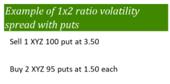
Strategy
Note that the options belong to the same underlying, have same expiration date and are in the same ratio (1:2).
Usually this is a net credit strategy, where the selling of the ITM put option finances the buying of the two OTM put options.
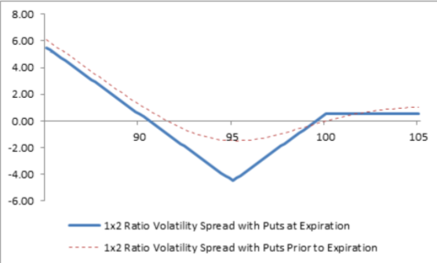
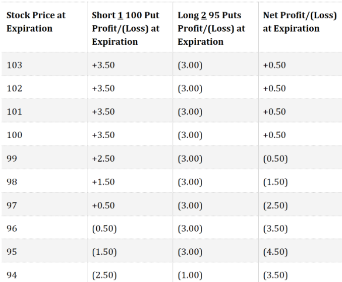
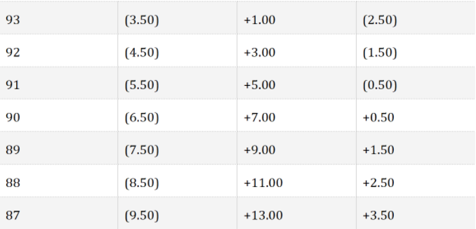
The calculations are as follows:
𝑆𝑝𝑟𝑒𝑎𝑑 = 𝐻𝑖𝑔ℎ𝑒𝑟 𝑆𝑡𝑟𝑖𝑘𝑒 – 𝐿𝑜𝑤𝑒𝑟 𝑆𝑡𝑟𝑖𝑘𝑒
𝐶𝑟𝑒𝑑𝑖𝑡 = 𝑃𝑟𝑒𝑚𝑖𝑢𝑚 𝑜𝑓 𝐼𝑇𝑀 𝑜𝑝𝑡𝑖𝑜𝑛 – 2∗𝑃𝑟𝑒𝑚𝑖𝑢𝑚 𝑜𝑓 𝐴𝑇𝑀 𝑜𝑝𝑡𝑖𝑜𝑛
𝑀𝑎𝑥𝑖𝑚𝑢𝑚 𝐿𝑜𝑠𝑠 = 𝑆𝑝𝑟𝑒𝑎𝑑 – 𝑁𝑒𝑡 𝐶𝑟𝑒𝑑𝑖𝑡
𝑀𝑎𝑥𝑖𝑚𝑢𝑚 𝑃𝑟𝑜𝑓𝑖𝑡 = 𝑈𝑛𝑙𝑖𝑚𝑖𝑡𝑒𝑑
𝐿𝑜𝑤𝑒𝑟 𝐵𝑟𝑒𝑎𝑘𝑒𝑣𝑒𝑛 𝑃𝑜𝑖𝑛𝑡 = 𝐿𝑜𝑤𝑒𝑟 𝑆𝑡𝑟𝑖𝑘𝑒 – 𝑀𝑎𝑥𝑖𝑚𝑢𝑚 𝐿𝑜𝑠𝑠
𝑈𝑝𝑝𝑒𝑟 𝐵𝑟𝑒𝑎𝑘𝑒𝑣𝑒𝑛 𝑃𝑜𝑖𝑛𝑡 = 𝐿𝑜𝑤𝑒𝑟 𝑆𝑡𝑟𝑖𝑘𝑒 + 𝑀𝑎𝑥𝑖𝑚𝑢𝑚 𝐿𝑜𝑠𝑠
A Pull Ratio Back Spread with puts is the same as selling a bull put spread and simultaneously buying a put with the same strike price as the long put in the bull put spread. The net premium received from the bull put spread is used to at least partially pay for the long put. The position profits if the underlying stock falls sharply beyond the strike price of the long puts.
Option Greeks:
Delta:
Long puts have negative deltas, and short puts have positive deltas. The net delta of a pull ratio back spread varies from −1.00 to +1.00, depending on the relationship of the stock price to the strike prices of the options. When established, the initial delta of a pull ratio back spread is negative. Furthermore, the delta falls (gets more negative) as the stock price falls and rises (gets less negative) as the stock price
rises. In the language of options, this is known as a “positive gamma.” As expiration approaches, the position delta approaches +1.00 if the short put is in the money and the long puts are out of the money. In this case, the delta of the short put approaches +1.00, and the deltas of the long puts approach zero. When the stock price is below the strike price of the long puts as expiration approaches, the position delta approaches −1.00, because the delta of the short put approaches +1.00 and the deltas of the two long puts approach −1.00 each. The position delta approaches zero as the stock price rises above the strike price of the short put, because the deltas of all puts approach zero.
Gamma:
Gamma is initially negligible or slightly negative when the underlying price is at or near the lower strike. It starts rising as the underlying price rises and moves away from the lower strike. This causes the Delta to turn positive and move higher. Gamma peaks out near the higher strike and starts tapering after that. As a result, once the underlying moves above the higher strike, Delta continues rising but at a slower rate as it approaches its upper extreme.
Vega:
In general a pull ratio back spread has a net positive Vega, because the position has two long puts and one short put. However, the impact of changing volatility, i.e., the net Vega, varies depending on the relationship of the stock price to the strike prices and on the time to expiration. When first established, assuming the stock price is close to the strike price of the short put and there are 28 days or more to expiration, the net Vega is positive, because the total positive Vega of the two long puts is greater than the negative Vega of the one short put. As expiration approaches, if the stock price is close to or below the strike price of the long puts (lower strike), then the net Vega is positive. If the stock price is close to the strike price of the short put (higher strike), then the net Vega tends to be negative. The net Vega approaches zero if the stock price rises above the higher strike.
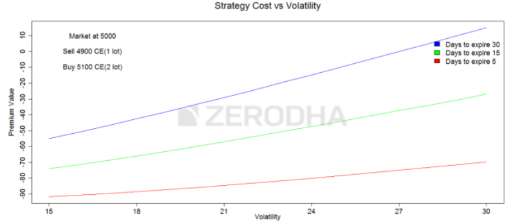
Theta:
In general pull ratio back spread has a net negative theta, because the position has two long puts and one short put. However, the impact of time erosion varies depending on the relationship of the stock price to the strike prices and on the time to expiration. When first established, assuming the stock price is close to the strike price of the short put and there are 14 days or more to expiration, the net theta is negative, because the total negative theta of the two long puts is greater than the positive theta of the one short put. As a result, the position loses money from time decay. As expiration approaches, if the stock price is close to or below the strike price of the long puts (lower strike), then the net theta is negative. If the stock price is close to the strike price of the short put (higher strike), then the net theta tends to be positive. The net theta approaches zero if the stock price rises above the higher strike.
Benefits of the strategy:
Drawbacks of the strategy:
Neutral Strategies:
Long Straddle:
A long straddle is a neutral strategy to profit from a big price change, either up or down in the underlying stock.
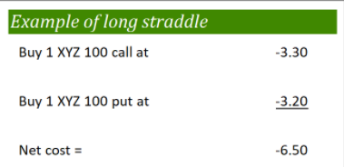
Strategy
Note that the options belong to the same underlying, have same expiration date, have the same strike price and are in the same ratio (1:1).
The calculations are as follows:
𝑁𝑒𝑡 𝑃𝑟𝑒𝑚𝑖𝑢𝑚 = 𝑁𝑒𝑡 𝐷𝑒𝑏𝑖𝑡 = 𝑃𝑟𝑒𝑚𝑖𝑢𝑚 𝑜𝑓 𝐶𝑎𝑙𝑙 𝑂𝑝𝑡𝑖𝑜𝑛 + 𝑃𝑟𝑒𝑚𝑖𝑢𝑚 𝑜𝑓 𝑃𝑢𝑡 𝑂𝑝𝑡𝑖𝑜𝑛
𝑀𝑎𝑥𝑖𝑚𝑢𝑚 𝐿𝑜𝑠𝑠 = 𝑁𝑒𝑡 𝑃𝑟𝑒𝑚𝑖𝑢𝑚 𝑃𝑎𝑖𝑑
𝑀𝑎𝑥𝑖𝑚𝑢𝑚 𝑃𝑟𝑜𝑓𝑖𝑡 = 𝑈𝑛𝑙𝑖𝑚𝑖𝑡𝑒𝑑
𝑈𝑝𝑝𝑒𝑟 𝐵𝑟𝑒𝑎𝑘𝑒𝑣𝑒𝑛 = 𝑆𝑡𝑟𝑖𝑘𝑒 𝑃𝑟𝑖𝑐𝑒 + 𝑁𝑒𝑡 𝑃𝑟𝑒𝑚𝑖𝑢𝑚
𝐿𝑜𝑤𝑒𝑟 𝐵𝑟𝑒𝑎𝑘𝑒𝑣𝑒𝑛 = 𝑆𝑡𝑟𝑖𝑘𝑒 𝑃𝑟𝑖𝑐𝑒 – 𝑁𝑒𝑡 𝑃𝑟𝑒𝑚𝑖𝑢𝑚
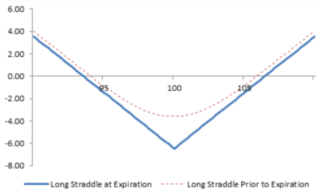
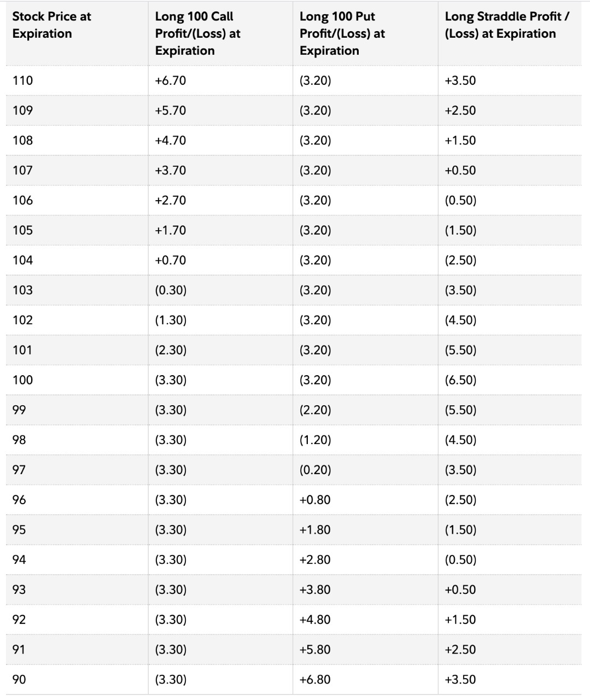
A long straddle is established for a net debit (or net cost) and profits if the underlying stock rises above the upper break-even point or falls below the lower break-even point. Profit potential is unlimited on the upside and substantial on the downside. Potential loss is limited to the total cost of the straddle.
Option Greeks:
Delta and Gamma:
When the stock price is at or near the strike price of the straddle, the positive delta of the call and negative delta of the put very nearly offset each other. Thus, for small changes in stock price near the strike price, the price of a straddle does not change very much. This means that a straddle has a “near-zero delta”. Delta estimates how much an option price will change as the stock price changes.
However, if the stock price “rises fast enough” or “falls fast enough,” then the straddle rises in price. This happens because, as the stock price rises, the call rises in price more than the put falls in price. Also, as the stock price falls, the put rises in price more than the call falls. In the language of options, this is known as “positive gamma.” Gamma estimates how much the delta of a position changes as the stock price changes. Positive gamma means that the delta of a position changes in the same direction as the change in price of the underlying stock. As the stock price rises, the net delta of a straddle becomes more and more positive, because the delta of the long call becomes more and more positive and the delta of the put goes to zero. Similarly, as the stock price falls, the net delta of a straddle becomes more and more negative, because the delta of the long put becomes more and more negative and the delta of the call goes to zero.
Vega:
As volatility rises, option prices – and straddle prices – tend to rise if other factors such as stock price and time to expiration remain constant. Therefore, when volatility increases, long straddles increase in price and make money. When volatility falls, long straddles decrease in price and lose money. In the language of options, this is known as “positive vega.” The time left to expiry determines the effect of vega on the position. More the time left to expiry, more the strategy profits due to increased volatility.
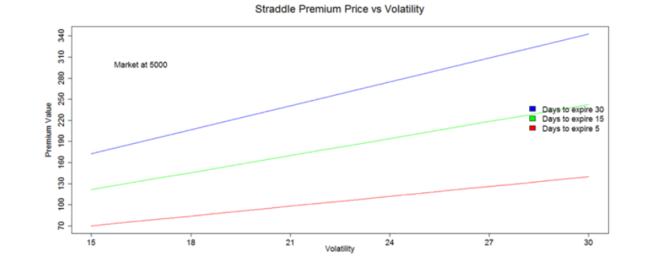
Theta:
The time value portion of an option’s total price decreases as expiration approaches. This is known as time erosion, or time decay. Since long straddles consist of two long options, the sensitivity to time erosion is higher than for single-option positions. Long straddles tend to lose money rapidly as time passes and the stock price does not change.
Benefits of the strategy:
Drawbacks of the strategy:
Short Straddle:
A short straddle is a neutral strategy which aims to profit from little to no price movement in the underlying stock and is opposite to the long straddle.
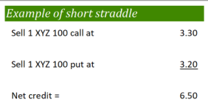
Strategy
Note that the options belong to the same underlying, have same expiration date, have the same strike price and are in the same ratio (1:1).
𝑇ℎ𝑒 𝑐𝑎𝑙𝑐𝑢𝑙𝑎𝑡𝑖𝑜𝑛𝑠 𝑎𝑟𝑒 𝑎𝑠 𝑓𝑜𝑙𝑙𝑜𝑤𝑠:
𝑁𝑒𝑡 𝑃𝑟𝑒𝑚𝑖𝑢𝑚 = 𝑁𝑒𝑡 𝐶𝑟𝑒𝑑𝑖𝑡 = 𝑃𝑟𝑒𝑚𝑖𝑢𝑚 𝑜𝑓 𝐴𝑇𝑀 𝑐𝑎𝑙𝑙 𝑜𝑝𝑡𝑖𝑜𝑛 + 𝑃𝑟𝑒𝑚𝑖𝑢𝑚 𝑜𝑓 𝐴𝑇𝑀 𝑃𝑢𝑡 𝑜𝑝𝑡𝑖𝑜𝑛
𝑀𝑎𝑥𝑖𝑚𝑢𝑚 𝐺𝑎𝑖𝑛 = 𝑁𝑒𝑡 𝐶𝑟𝑒𝑑𝑖𝑡
𝑀𝑎𝑥𝑖𝑚𝑢𝑚 𝐿𝑜𝑠𝑠 = 𝑈𝑛𝑙𝑖𝑚𝑖𝑡𝑒𝑑
𝐿𝑜𝑤𝑒𝑟 𝐵𝑟𝑒𝑎𝑘𝑒𝑣𝑒𝑛 = 𝑆𝑡𝑟𝑖𝑘𝑒 𝑃𝑟𝑖𝑐𝑒 – 𝑁𝑒𝑡 𝑃𝑟𝑒𝑚𝑖𝑢𝑚
𝑈𝑝𝑝𝑒𝑟 𝐵𝑟𝑒𝑎𝑘𝑒𝑣𝑒𝑛 = 𝑆𝑡𝑟𝑖𝑘𝑒 𝑃𝑟𝑖𝑐𝑒 + 𝑁𝑒𝑡 𝑃𝑟𝑒𝑚𝑖𝑢𝑚
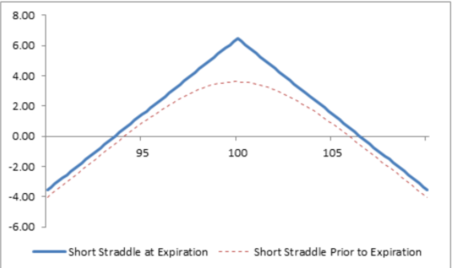
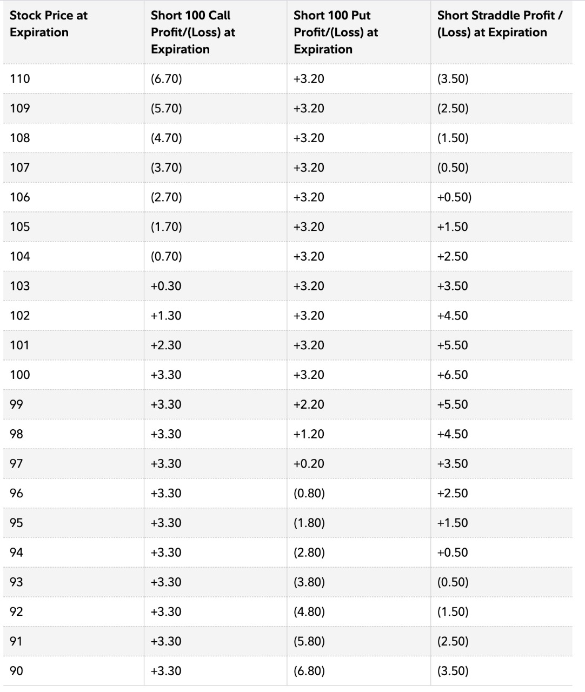
A short straddle is established for a net credit (or net receipt) and profits if the underlying stock trades in a narrow range between the break-even points. Profit potential is limited to the total premiums received. Potential loss is unlimited if the stock price rises and substantial if the stock price falls.
Option Greeks:
Delta and Gamma:
When the stock price is at or near the strike price of the straddle, the positive delta of the call and negative delta of the put very nearly offset each other. Thus, for small changes in stock price near the strike price, the price of a straddle does not change very much. This means that a straddle has a “near-zero delta.” Delta estimates how much an option price will change as the stock price changes.
However, if the stock price “rises fast enough” or “falls fast enough,” then the straddle rises in price, and a short straddle loses money. This happens because, as the stock price rises, the short call rises in price more and loses more than the short put makes by falling in price. Also, as the stock price falls, the short put rises in price more and loses more than the call makes by falling in price. In the language of options, this is known as “negative gamma.” Gamma estimates how much the delta of a position changes as the stock price changes. Negative gamma means that the delta of a position changes in the opposite direction as the change in price of the underlying stock. As the stock price rises, the net delta of a straddle becomes more and more negative, because the delta of the short call becomes more and more negative and the delta of the short put goes to zero. Similarly, as the stock price falls, the net delta of a straddle becomes more and more positive, because the delta of the short put becomes more and more positive and the delta of the short call goes to zero.
Vega:
Volatility is a measure of how much a stock price fluctuates in percentage terms, and volatility is a factor in option prices. As volatility rises, option prices – and straddle prices – tend to rise if other factors such as stock price and time to expiration remain constant. Therefore, when volatility increases, short straddles increase in price and lose money. When volatility falls, short straddles decrease in price and make money. In the language of options, this is known as “negative vega.”
Theta:
The time value portion of an option’s total price decreases as expiration approaches. This is known as time erosion, or time decay. Since short straddles consist of two short options, the sensitivity to time erosion is higher than for single-option positions. Short straddles tend to make money rapidly as time passes and the stock price does not change.
Benefits of the strategy:
Drawbacks of the strategy: